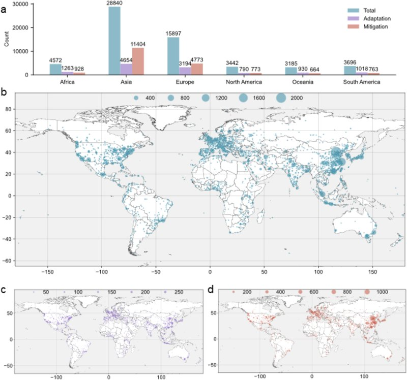
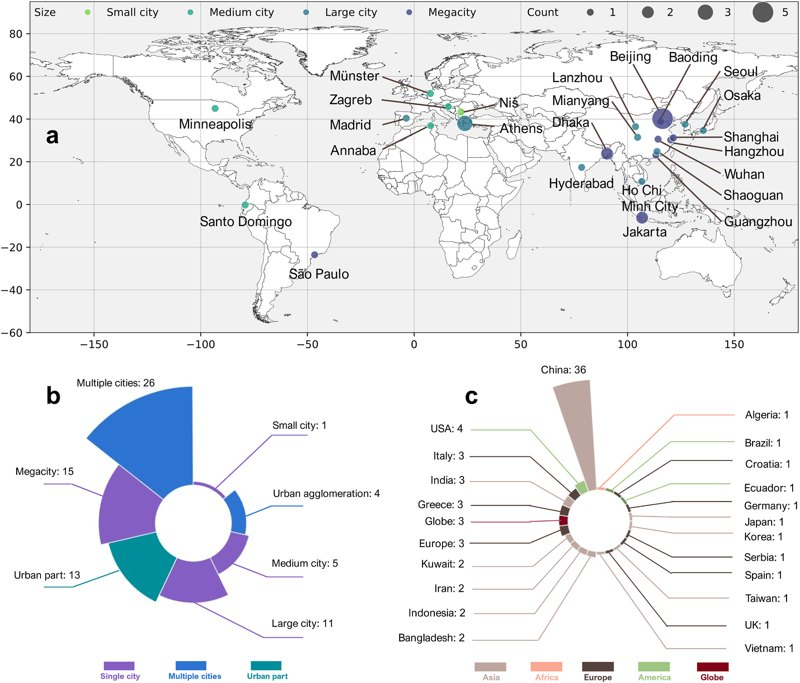
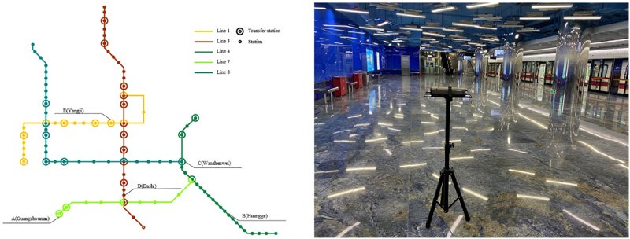
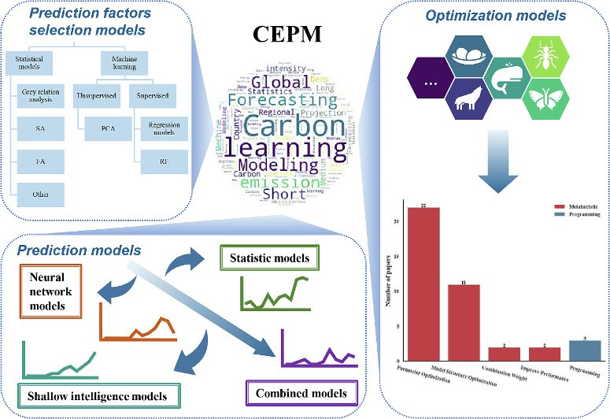
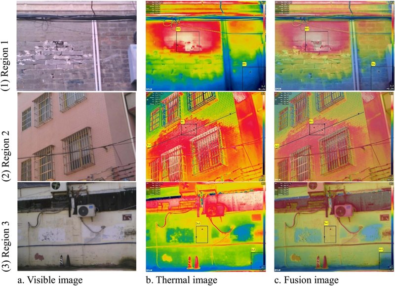

All Publications

Estimated municipality-level electric vehicle and passenger vehicle fleet composition across 14 European countries, 2011–2024
Abstract
We present a longitudinal dataset of passenger vehicle fleet composition for 71,715 Local Administrative Units across 14 European countries over 2011–2024. An XGBoost-based spatial prediction model allocates official national vehicle statistics to municipalities using GDP per capita, population, and road-masked nighttime light intensity. The dataset distinguishes battery electric, plug-in hybrid, fuel-cell electric, and other vehicles. Independent validation using Eurostat regional data and municipal data from Norway and Sweden yields R² values of 0.82–0.98, supporting comparative analysis of electric vehicle adoption and spatial disparities.

Diagnosing systematic overestimation and feature dependencies in data-driven predictions of urban CO₂ emissions in China
Abstract
This study evaluates 18 machine learning algorithms using county-level CO₂ emissions in China from 2001 to 2020 and 41 socioeconomic, environmental, and energy features. Nearly all models systematically overestimate emissions across space and time. Feature-selection comparisons and bootstrap uncertainty analysis show that aggressive dimensionality reduction often harms performance, while retaining diverse features helps capture the complexity of urban emissions. CatBoost and LightGBM perform best, highlighting the need to diagnose and correct systematic prediction biases for reliable urban carbon management.

Heterogeneous urban decarbonization pathways revealed by typological and machine learning frameworks: A global analysis across Annex I cities
Abstract
We combine urban typological clustering with a context-aware FiLMSeq2Seq deep learning framework to project CO₂ emissions for 46,833 cities in Annex I countries through 2050 under Shared Socioeconomic Pathways. Five urban typologies exhibit distinct emission trajectories. Under the Business-As-Usual scenario, 31.5% of the 1,335 sprawling cities show emission growth, while moderate vertical cities contribute a total emission reduction of 798.2 Mt. These findings support strategies tailored to urban typology to realize cities’ decarbonization potential.

Mapping and topic modeling of over 133,000 studies on climate change and cities: Trends, geographical disparities, and future research needs

Machine learning for predicting urban greenhouse gas emissions: A systematic literature review
Abstract
Greenhouse gases play a crucial role in shaping urban climate patterns and dynamics. Using machine learning methods offers opportunities for predicting greenhouse gas emissions in cities, both now and in the future. Here, we review 75 papers from 2003 to 2023 that utilized machine learning to forecast urban greenhouse gas emissions. We focus on two aspects: the models used and the driving factors of emissions. Across all models, R² range from 0.5231 to 0.9989, MAPE range from 0.3017% to 26.3%. Hybrid and neural network models emerged as the most popular choices. We propose three key recommendations to enhance the accuracy and reliability of future machine learning models: (1) establish criteria for evaluating influential factors and model selection, (2) enhance spatial prediction in machine learning by optimization models, and (3) explore and compare how greenhouse gas prediction models perform across diverse urban settings.

Analyzing particulate matter characteristics of the subway system: Case study of Guangzhou
Abstract
This study aims to: (1) evaluate the concentration distribution of particulate matter in the Guangzhou metro system; (2) compare particulate matter concentrations under different conditions, including time, season, location, subway lines, and sampling height; (3) compare the concentrations with existing research and propose future improvement measures. Spatial factors were significantly correlated with particulate matter concentration, and stratification of PM10 was identified at various heights in both carriages and platforms — the PM10 average concentration at 80cm is 14% higher than at 120cm and 13% higher than at 150cm. We suggest mitigation measures for particulate matter in both carriage and platform environments.

Carbon emission prediction models: A review
Abstract
Amidst growing concerns over the greenhouse effect, establishing effective Carbon Emission Prediction Models (CEPMs) is imperative for climate change mitigation. A review of 147 CEPM studies revealed three predominant functions — prediction, optimization, and prediction factor selection. Statistical models were the most prevalent (75 instances), followed by neural network models (21.8%), with a consistent rise in neural network usage from 2019 to 2022. A majority of CEPMs incorporated optimized approaches, with 94.4% utilizing metaheuristic models. We summarize the pros and cons of existing models, classify the factors that influence carbon emissions, clarify research objectives in CEPM, and assess model evaluation methods and the spatial/temporal scales of existing research.

Thermography evaluation of defect characteristics of building envelopes in urban villages in Guangzhou, China
Abstract
In many cities, the building envelope is deteriorating and aging. A 3-day infrared thermography (IRT) experiment was conducted on 5 buildings (11 rooms) in an urban village in Guangzhou, China. Three types of building defects were found: conduction thermal defects, ventilation defects, and moisture. An improved temperature factor framework (ITF) is proposed to evaluate conduction thermal defects. Conduction thermal defects were the most common, occurring 28 times across five residential buildings, mainly at the joints of different walls and structures. Orientation was found to have an important effect on thermal defects, and thermal bridges were more likely to occur on extended floors built on the original building.